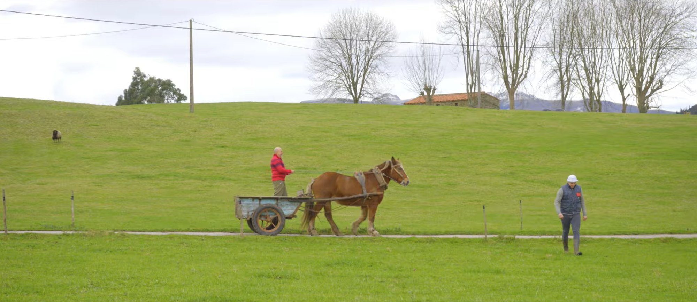
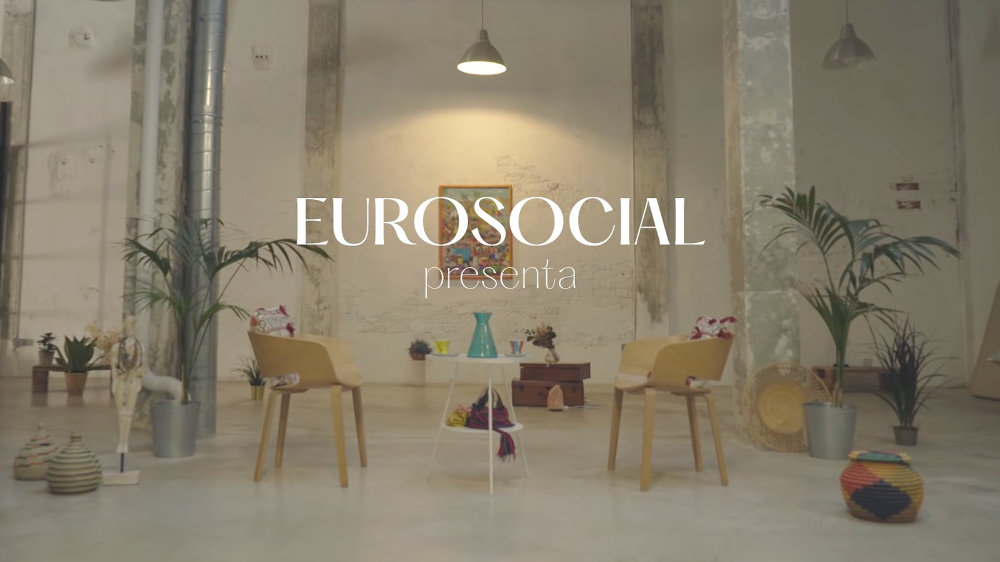

Encargos Encargos para ONG, cooperación internacional y marcas
Fotograma
1_
Asociación Nueva Vida
Colaboración continuada · 2023–
Encargo Documentar el trabajo diario de una entidad con personas en los márgenes y convertirlo en campañas que la gente se para a ver.
Mi papel Realizador documental: registrar las historias de las personas usuarias y de los programas. También campañas, del guion al montaje.
Resultado Más de tres años de campañas y más de 6 millones de visualizaciones.
Leer el caso →

Fotograma
2_
Bienvenido al futuro
Calidad Rural · 2026
Encargo Campaña para dar visibilidad a lo rural e incentivar el consumo de productos y servicios del medio rural. Calidad Rural es la marca de calidad territorial europea para lo que se produce en el campo con respeto por el medio ambiente.
Mi papel Grabación y montaje.
Resultado Más de 300.000 visualizaciones orgánicas.
Leer el caso →
Fotograma
3_
El Free Tour de la Trata
NO.MAS.TRATA · 2025
Encargo Campaña de sensibilización sobre la trata de personas, planteada como un tour guiado por la ciudad.
Mi papel Idea, dirección, producción y montaje, de principio a fin.
Resultado Más de 4 millones de reproducciones y amplia repercusión en medios.
Leer el caso →

Fotograma
4_
EUROsociAL+ · UE–Centroamérica
EUROsociAL+ · 2022
Encargo Dos campañas en vídeo sobre los hitos del marco de cooperación de la UE con Centroamérica.
Mi papel Dirección.
Resultado Dos campañas entregadas, construidas en torno a una conversación entre dos consultores del programa.
Leer el caso →
Ver
5_
Serie de formación técnica, Honduras
GIZ / INBAS · 2020–21
Encargo Vídeos formativos sobre procesado de productos hortofrutícolas para la formación profesional no formal.
Mi papel Coordinación audiovisual entre los expertos técnicos y un equipo de cineastas locales.
Resultado 15 vídeos formativos incorporados a la plataforma nacional CADERH.
Ver el vídeo
Algunos encargos con un enfoque más personal están en Films: LeFeu, 2021 →
 Fotograma
Fotograma